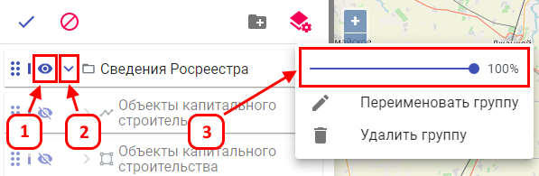

Управление отображением группы или слоя осуществляется с помощью индикатора отображения «глазик» (1), работает так же, как с отключенным режимом «настройки слоев в проекте».
Для сохранения по умолчанию группу развернутой, требуется её развернуть в режиме «настройки слоев в проекте» (2), работает так же, как с отключенным режимом «настройки слоев в проекте».
Для настройки прозрачности по умолчанию, требуется изменить прозрачность в режиме «настройки слоев в проекте» (3), работает так же, как с отключенным режимом «настройки слоев в проекте».
